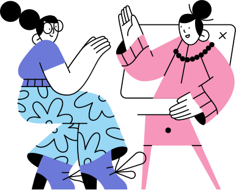
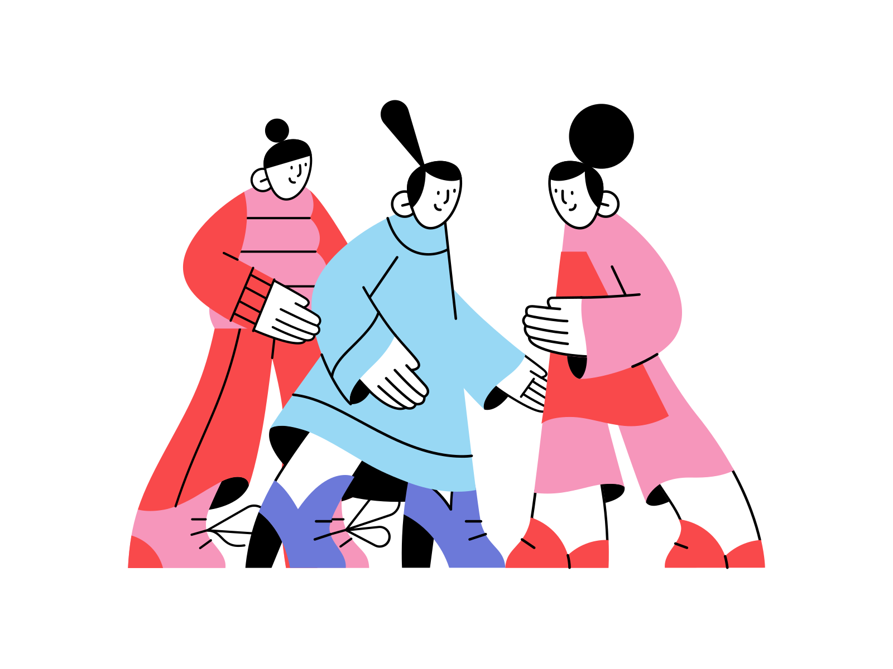
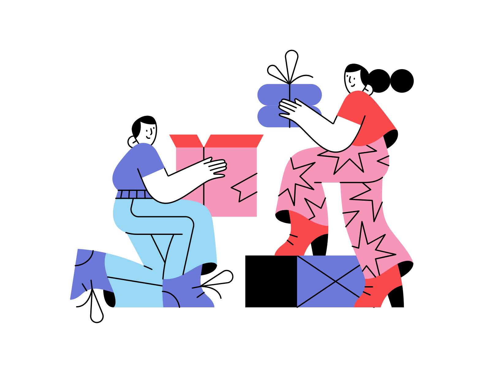
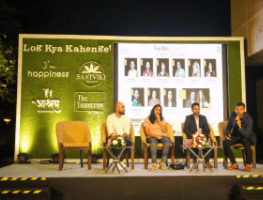
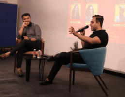
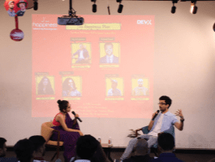
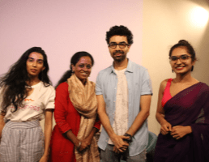
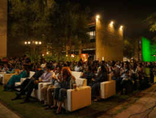

Hello Happiness Campaign
Hello Happinees
Hello Happiness is an Initiative by IM Happiness, supported by Department of science & technology in association with VIPO, Karma, GoodThingsComeTogether and Saatviki. he Campaign will engage in giving surprise calls to Covid positive patients and changemakers, either directly or on requests sent by the friends or relatives of the infected people.
Aim of Hello Happiness
Our aim is to inculcate hope in people’s current state and progress towards a solutions life situations. It’s important for people to stay connected, as well as talk to others who are in similar situations. We aim to provide exclusive mentoring to people on various queries in their lives, and provide a moment of respite amidst the current scenario.
At times when a person is mentally and physically exhausted, what can be better than a surprise call from a celebrity or a mentor? Through this campaign, we would cater indexes like Career, Relationships, Purpose of life, Financial anxiety, Emotional imbalances, Fear, Stress, Insomnia and a whole lot of other issues which go unchecked.
Happiness Ambassadors
Daniel Weber
Harsh Kedia
Arohi Patel
Osamn mir
Daniel Weber
Harsh Kedia
Mental Health and The Pandemic
The Pandemic is having had a great impact on everyone’s lives. And an even bigger impact on those who have been affected by it or are working on the frontlines. That, combined with the current scenario of curfews/lockdown and the uncertainity surrounding people’s lives is creating problems of anxiety, depression, social & mental isolation, chronic loneliness and boredom amongst the ones affected. In a country where already 20% of the population is suffering from mental illnesses, the mental health issues due to pandemic are leading to adverse health consequences, including depression, impaired executive function, accelerated cognitive decline, poor cardiovascular function, and impaired immunity at every stage of life, eventually leading to higher risk of contracting Covid.

Amidst all this, we decided to do our bit to tackle the problems of Loneliness, boredom and mental isolation in case of the Covid- positive patients and the frontline workers and came up with a unique proposition. At times when a person is mentally and physically exhausted, what can be better than a surprise call from a celebrity or a mentor? This gave birth to the idea of "Hello Happiness".
Change Maker Campaign

In the changemakers campaign, people from different walks of life will step up and share about what difference are they making or how are they doing their bit to alleivate the current situation.
They will also give a glimpse into their own happiness hacks; sharing with us their ways to stay happy and sane amidst the ocean of negativity by driving open conversations around mental health.
About Im Happiness
Im Happiness is a global endeavour working to increase happiness index & creating awareness on cognitive fitness on lines of United Nations for good health & well-being.
We have uplifted the lives of more than 20,000 people across children, parents, caregivers and teachers in their mental well-being.
Our work is backed by a team of psychologists, neuroscientists and experts in the field of developing human potential.

Since childhood we are taught social skills, physical skills & creative skills, but what about Positivity & Happiness Skill ? We are one of the first initiatives in India, working towards holistic living through research on behavioural training.
Team Members
Garima Jain
Core Team Member
A 90's baby catapulted into this word, carrying lots of zest & urging with kindness a brunch of harmonies to spread positivity, love, peace and happiness.
Happiness hack: "Happiness Hack: Simply spending beautiful & quality time with my loved ones" She loves her work & believes in the ideology to never truly feel like, “now I’ve made it, this is the time when I can stop”. She strives to achieve perfection in everything and considers her work to be meditation & the source of peace in her life.
Garima Jain
Core Team Member
Happiness hack:"Happiness Hack: Simply spending beautiful & quality time with my loved ones" She loves her work & believes in the ideology to never truly feel like, “now I’ve made it, this is the time when I can stop”. She strives to achieve perfection in everything and considers her work to be meditation & the source of peace in her life.
Garima Jain
Core Team Member
Happiness hack:"Happiness Hack: Simply spending beautiful & quality time with my loved ones" She loves her work & believes in the ideology to never truly feel like, “now I’ve made it, this is the time when I can stop”. She strives to achieve perfection in everything and considers her work to be meditation & the source of peace in her life.
Garima Jain
Core Team Member
Happiness hack:"Happiness Hack: Simply spending beautiful & quality time with my loved ones" She loves her work & believes in the ideology to never truly feel like, “now I’ve made it, this is the time when I can stop”. She strives to achieve perfection in everything and considers her work to be meditation & the source of peace in her life.
In Association With
Gallery





Snapshots of our previous intetive